คู่มือปฏิบัติงาน — ผู้ดูแลระบบ (Admin)
ระบบรถรับส่งนักเรียนจังหวัดลำปาง — https://schoolbuslampang.com เวอร์ชัน Phase 10.13C • อัปเดต 2026-06-24
📷 หมายเหตุภาพหน้าจอ: ข้อมูลส่วนบุคคล (ชื่อนักเรียน/ผู้ปกครอง เบอร์โทร) ในภาพถูกเบลอเพื่อความเป็นส่วนตัว — เมื่อใช้งานจริงจะแสดงข้อมูลตามปกติ
ภาพรวม 30 วินาที
- บทบาทนี้ทำอะไรได้:
- จัดการบัญชีผู้ใช้ทุกบทบาท (คนขับ/โรงเรียน/สังกัด/จังหวัด/ขนส่ง/ผู้ดูแลระบบ) — สร้าง แก้ไข รีเซ็ตรหัส เปิด/ปิด
- ดูประวัติการใช้งานทั้งระบบ (audit log) + ส่งออก CSV
- อนุมัติคำขอโอนย้ายนักเรียน และคำขอเกี่ยวกับรถ (กู้คืน/เพิ่ม/ตรวจสอบ)
- ดูแลสุขภาพข้อมูลคนขับ + ใช้ wizard กู้คืน/ย้าย/ปิดคนขับ
- ตรวจสอบจุดรับส่งและตำแหน่งรถ (GPS) ทั้งระบบ, ดูความพร้อมเปิดใช้งาน + สุขภาพระบบ
- เข้าใช้ทุกโมดูล (โรงเรียน/สังกัด/จังหวัด/ขนส่ง/รายงาน) + หน้างานวิจัย/ประเมินผล (เป็นสิทธิ์สูงสุดของระบบ)
- เข้าระบบด้วย: ชื่อผู้ใช้ (username) ของบัญชี admin (ไม่ใช่ทะเบียนรถ) — บัญชีสร้างโดยระบบติดตั้งครั้งแรก หรือ admin อีกคน
- อุปกรณ์ที่แนะนำ: คอมพิวเตอร์ (desktop) เป็นหลัก เพราะมีตาราง/ฟอร์ม/รายงานเยอะ และเห็นแถบเมนูด้านข้างครบ — มือถือ/แท็บเล็ตใช้ดูข้อมูลเร่งด่วนได้แต่ไม่เหมาะกับงานจัดการซับซ้อน
สารบัญงาน
| # | งาน | ใช้เมื่อ |
|---|---|---|
| 1 | เข้าสู่ระบบ + เปลี่ยนรหัสครั้งแรก | ทุกครั้งที่เริ่มใช้งาน / บัญชีถูกสร้างใหม่หรือถูกรีเซ็ต |
| 2 | ดูศูนย์ควบคุมระบบ (หน้าแรก) | ตรวจภาพรวม + การเตือนประจำวัน |
| 3 | จัดการผู้ใช้งาน (สร้าง/แก้ไข/รีเซ็ต/ลบ) | สร้างหรือดูแลบัญชีทุกบทบาท |
| 4 | อนุมัติคำขอโอนย้ายนักเรียน | มีคำขอย้าย/แก้โรงเรียนที่ผิด |
| 5 | อนุมัติคำขอเกี่ยวกับรถ | มีคำขอกู้คืน/เพิ่ม/ใช้รถ/ตรวจสอบ |
| 6 | ดูแลสุขภาพข้อมูลคนขับ + wizard | ข้อมูลคนขับผิดพลาด/ซ้ำ/ต้องย้าย-ปิด |
| 7 | ตรวจสอบจุดรับส่ง | จัดการกรณีพิเศษของจุดรับส่ง |
| 8 | ตรวจสอบตำแหน่งรถ (GPS) | ดูสถานะ GPS รถทั้งระบบ |
| 9 | ดูความพร้อมเปิดใช้งาน | ตรวจว่าข้อมูลพร้อมบังคับนโยบายแค่ไหน |
| 10 | ดูสุขภาพระบบ | ดูสถิติการใช้งานย้อนหลัง 30 วัน |
| 11 | ดูประวัติการใช้งาน (Audit Log) + ส่งออก | ตรวจสอบ/ตามรอยการกระทำในระบบ |
| 12 | งานวิจัย/ประเมินผล | สร้าง baseline, ส่งออกข้อมูลวิจัย, ประเมินผล |
| 13 | รายงานและการส่งออก | ออกรายงานรายวัน/เดือน/สรุป + export |
| 14 | เข้าใช้งานโมดูลบทบาทอื่น | ทำงานแทนโรงเรียน/สังกัด/ขนส่ง/จังหวัด |
| 15 | ฟีเจอร์ขั้นสูงที่ปิดอยู่ (Geofence/เบี่ยงเส้นทาง/QR) | อ้างอิงเมื่อถามถึงฟีเจอร์ที่ยังปิด |
| 16 | ออกจากระบบ | เลิกใช้งาน |
🔒 ทุกหน้าใต้ส่วน admin บังคับสิทธิ์ผู้ดูแลระบบ — บทบาทอื่นเข้าไม่ได้ และ ทุกการกระทำถูกบันทึกใน audit log
งานที่ 1 — เข้าสู่ระบบ + เปลี่ยนรหัสครั้งแรก
ใช้เมื่อ: เริ่มใช้งานระบบทุกครั้ง / บัญชีถูกสร้างใหม่หรือถูกรีเซ็ตรหัส
ขั้นตอนเข้าสู่ระบบ:
- เปิดเบราว์เซอร์ไปที่ https://schoolbuslampang.com → ระบบพาไปหน้าเข้าสู่ระบบ
- กรอก ชื่อผู้ใช้ (username) ของบัญชี admin ที่ช่อง "ชื่อผู้ใช้ / ทะเบียนรถ" (admin ใช้ชื่อผู้ใช้ ไม่ใช่ทะเบียนรถ)
- กรอก รหัสผ่าน
- กด เข้าสู่ระบบ

ภาพ: หน้าเข้าสู่ระบบ (เดสก์ท็อป)

ภาพ: หน้าเข้าสู่ระบบ (มือถือ)
ขั้นตอนเปลี่ยนรหัสครั้งแรก (เมื่อบัญชีถูกสร้างใหม่/ถูกรีเซ็ต):
- เข้าสู่ระบบครั้งแรก → ระบบพาไปหน้า เปลี่ยนรหัสผ่าน พร้อมข้อความ "กรุณาเปลี่ยนรหัสผ่านเริ่มต้น"
- ตั้งรหัสใหม่ให้แข็งแรง: อย่างน้อย 8 ตัวอักษร (ไม่เกิน 128), ห้ามตรงกับชื่อผู้ใช้, ห้ามเดาง่าย (เช่น 12345678, password), ห้ามใช้อักขระตัวเดียวซ้ำทั้งหมด
- บันทึก แล้วจึงใช้งานเมนูอื่นได้

ภาพ: หน้าเปลี่ยนรหัสผ่าน (บังคับเปลี่ยนครั้งแรก)
✅ ผลลัพธ์ที่ถูกต้อง: เข้าสู่ "ศูนย์ควบคุมระบบ" ได้ (ถ้าต้องเปลี่ยนรหัส จะใช้งานเมนูอื่นได้หลังเปลี่ยนสำเร็จ)
⚠️ ถ้าติดปัญหา:
- ขึ้น "กรุณาเปลี่ยนรหัสผ่านก่อนใช้งานระบบ" → ต้องเปลี่ยนรหัสให้เสร็จก่อน จึงใช้เมนูอื่นได้
- ระบบไม่มีปุ่ม "ลืมรหัสผ่าน" และไม่มี self-service — ถ้าลืมรหัส ต้องให้ admin อีกคน รีเซ็ตให้ที่หน้า "จัดการผู้ใช้งาน" (ควรมี admin สำรองอย่างน้อย 2 บัญชีเสมอ; ถ้าเป็น admin คนเดียวและถูกล็อกออก ต้องพึ่งผู้ดูแลเซิร์ฟเวอร์แก้ที่ฐานข้อมูล)
- ขณะ admin สร้าง/รีเซ็ตให้ ต้องตั้งรหัสชั่วคราว อย่างน้อย 8 ตัวอักษร (ห้ามตรงกับชื่อผู้ใช้ ห้ามเดาง่าย เช่น 12345678/password) — และผู้ใช้จะถูกบังคับตั้งรหัสใหม่อีกครั้งตอนล็อกอินครั้งถัดไป
- ข้อความผิดพลาดและสาเหตุ:
| ข้อความ | สาเหตุ |
|---|---|
| ชื่อผู้ใช้หรือรหัสผ่านไม่ถูกต้อง | ชื่อผู้ใช้หรือรหัสผ่านผิด (ระบบไม่ระบุว่าผิดตรงไหนเพื่อความปลอดภัย) |
| บัญชีนี้ถูกปิดการใช้งาน | บัญชีถูกระงับระหว่างใช้งานอยู่ |
| มีการพยายามเข้าสู่ระบบหลายครั้ง… | พยายามถี่เกินไป (จำกัด 20 ครั้ง/15 นาที) รอประมาณ 15 นาที |
| เซสชันหมดอายุจากการเปลี่ยนรหัสผ่าน… | มีการเปลี่ยน/รีเซ็ตรหัสบัญชีคุณ — ต้องเข้าสู่ระบบใหม่ |
ℹ️ เรื่องเซสชัน: access token อายุ 24 ชั่วโมง แต่ระบบต่ออายุอัตโนมัติเบื้องหลังด้วย refresh token (อายุ 7 วัน) — ใช้งานต่อเนื่องจะไม่ถูกเด้งออกบ่อย โดยทั่วไปอยู่ได้สูงสุดราว 7 วันต่อการเข้าสู่ระบบหนึ่งครั้ง เมื่อมีการเปลี่ยน/รีเซ็ตรหัสบัญชีใด token เก่าของบัญชีนั้นจะถูกยกเลิกทันที
งานที่ 2 — ดูศูนย์ควบคุมระบบ (หน้าแรก)
ใช้เมื่อ: เริ่มงานแต่ละวัน เพื่อดูภาพรวมและการเตือนสำคัญ
ขั้นตอน:
- หลังเข้าสู่ระบบ ระบบเปิดหน้า "ศูนย์ควบคุมระบบ" ให้อัตโนมัติ
- ดู KPI 4 ตัว: รถรับส่ง / นักเรียน / โรงเรียน / ผู้ใช้งาน
- ดู แบนเนอร์สถานะวันนี้: รอส่งเช้า / รอรับเย็น / เหตุฉุกเฉิน
- ตรวจ Executive Attention Panel (การ์ดที่ต้องดูแล) 3 ใบ:
- "ผู้ใช้ต้องดูแล" → คลิกไป "จัดการผู้ใช้งาน" แบบกรองเฉพาะบัญชีที่ถูกปิดใช้งาน
- "คำขอรออนุมัติ" → แสดงจำนวนคำขอที่รอ
- "ลบข้อมูล (24 ชม.)" → คลิกไป audit log กรองเฉพาะการลบ
- ใช้ ทางลัด ไปงานที่ใช้บ่อย: จัดการผู้ใช้งาน / ประวัติการใช้งาน / จัดการโรงเรียน / ตรวจสภาพรถ
ภาพ: ศูนย์ควบคุมระบบ
✅ ผลลัพธ์ที่ถูกต้อง: เห็น KPI, แบนเนอร์สถานะวันนี้, การ์ดเตือน และทางลัดครบ
ℹ️ การ์ด "คำขอรออนุมัติ" แสดงตัวเลขรวมเพื่อเตือนเท่านั้น ยังไม่มีหน้าคำขอรายชื่อรวมของ admin — การอนุมัติคำขอเปลี่ยนรายชื่อ (roster) ทำที่ฝั่งโรงเรียน
งานที่ 3 — จัดการผู้ใช้งาน (สร้าง/แก้ไข/รีเซ็ต/ลบ)
ใช้เมื่อ: ต้องสร้างหรือดูแลบัญชีทุกบทบาท (สิทธิ์เฉพาะ admin)
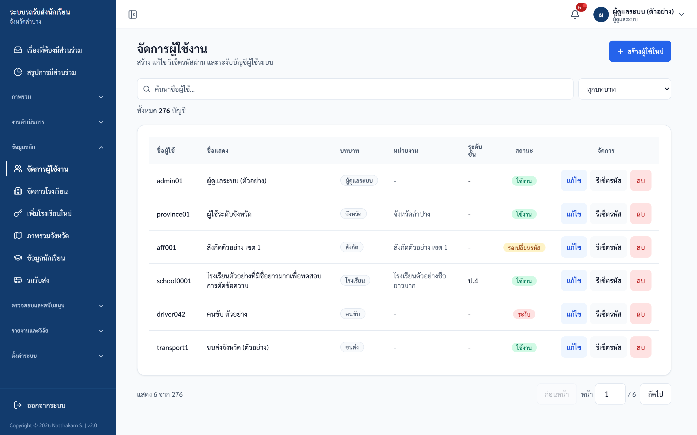
ภาพ: จัดการผู้ใช้งาน
สิ่งที่เห็นบนหน้าจอ: ปุ่ม "+ สร้างผู้ใช้ใหม่", ช่องค้นหา "ค้นหาชื่อผู้ใช้…", ตัวกรอง "ทุกบทบาท", ตารางผู้ใช้ (ชื่อผู้ใช้ / ชื่อแสดง / บทบาท / หน่วยงาน / ระดับชั้น / สถานะ / จัดการ) แต่ละแถวมีปุ่ม "แก้ไข" "รีเซ็ตรหัส" "ลบ" — ป้ายสถานะ: ระงับ (แดง) / รอเปลี่ยนรหัส (เหลือง) / ใช้งาน (เขียว)
ขั้นตอน — สร้างผู้ใช้ใหม่:
- กด "+ สร้างผู้ใช้ใหม่"
- กรอก ชื่อผู้ใช้ และ รหัสผ่าน (ชั่วคราว, อย่างน้อย 8 ตัวอักษร — ห้ามตรงกับชื่อผู้ใช้/ห้ามเดาง่าย)
- เลือก บทบาท — คนขับ / โรงเรียน / สังกัด / จังหวัด / ขนส่ง / ผู้ดูแลระบบ
- ถ้าบทบาทเป็น โรงเรียน / สังกัด / จังหวัด เลือก "หน่วยงาน" (scope) ให้ถูกต้อง
- ถ้าบทบาท โรงเรียน เลือก "ระดับชั้น" ได้ (= สร้างบัญชีครูประจำสายชั้น แบบอ่านอย่างเดียวเฉพาะชั้นนั้น)
- กด "สร้างผู้ใช้"
ขั้นตอน — แก้ไขผู้ใช้:
- กด "แก้ไข" ที่แถวของผู้ใช้
- ปรับได้ 2 อย่าง: ชื่อแสดง และ สถานะ (ใช้งาน ↔ ระงับ)
- กด "บันทึก"
ขั้นตอน — รีเซ็ตรหัสผ่าน:
- กด "รีเซ็ตรหัส" ที่แถวของผู้ใช้
- กรอกรหัสใหม่ (ชั่วคราว) อย่างน้อย 8 ตัวอักษร (ห้ามตรงกับชื่อผู้ใช้ ห้ามเดาง่าย)
- ยืนยัน → ระบบแสดง "รีเซ็ตรหัสผ่านสำเร็จ — ผู้ใช้จะต้องเปลี่ยนรหัสผ่านเมื่อ login ครั้งถัดไป"
ขั้นตอน — ลบผู้ใช้:
- กด "ลบ" ที่แถวของผู้ใช้ → ยืนยันในกล่องที่เด้งขึ้น
- ระบบลบแบบ soft delete (ซ่อนจากระบบแต่ยังเก็บประวัติ)
✅ ผลลัพธ์ที่ถูกต้อง: บัญชีใหม่ถูกตั้งเป็น "ต้องเปลี่ยนรหัส" เสมอ / การแก้ไข-รีเซ็ต-ลบ มีผลในตารางทันที
⚠️ ถ้าติดปัญหา:
- ชื่อผู้ใช้ซ้ำ → ขึ้น "ชื่อผู้ใช้นี้มีอยู่ในระบบแล้ว" ให้เลือกชื่อใหม่
- หน้าจอแก้ไข ไม่มีช่องเปลี่ยนบทบาท/หน่วยงาน — ถ้าต้องเปลี่ยน แนะนำให้สร้างบัญชีใหม่ให้ถูกบทบาทแล้วปิดบัญชีเดิม
- เปิดใช้งานบัญชีคนขับซ้ำอาจถูกบล็อก → ขึ้น "ไม่สามารถเปิดใช้งานบัญชีคนขับนี้ได้…" (บัญชีซ้ำ/ผูกรถที่ถูกปิด) ให้ใช้บัญชีหลัก (canonical) หรือใช้ wizard ที่ "สุขภาพข้อมูลคนขับ" (งานที่ 6)
- รีเซ็ตรหัสจะทำให้ session เดิมของผู้ใช้คนนั้นหมดอายุทันที (ต้องเข้าสู่ระบบใหม่)
- ลบบัญชีตัวเองไม่ได้ → ขึ้น "ไม่สามารถลบตัวเองได้"
งานที่ 4 — อนุมัติคำขอโอนย้ายนักเรียน
ใช้เมื่อ: มีคำขอย้าย/แก้โรงเรียนที่ผิด — ไม่มีอะไรถูกย้ายจนกว่าคุณจะกดอนุมัติ
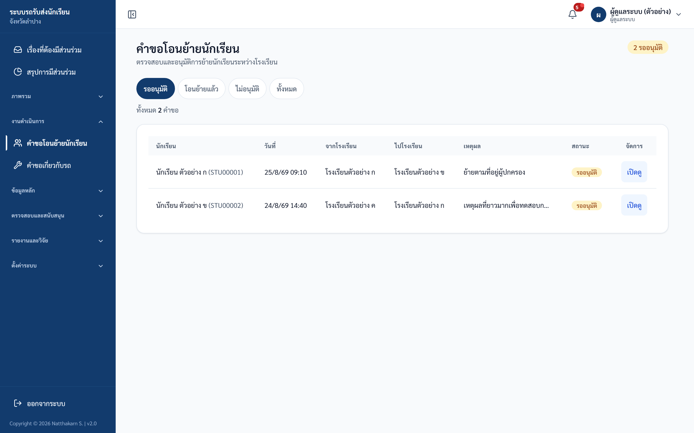
ภาพ: คำขอโอนย้ายนักเรียน
ขั้นตอน:
- เลือกตัวกรอง: รออนุมัติ / โอนย้ายแล้ว / ไม่อนุมัติ / ทั้งหมด
- กด "เปิดดู" ที่คำขอ — อ่านรายละเอียดและคำเตือน (เช่น รหัสนักเรียนซ้ำที่ปลายทาง หรือนักเรียนยังมีรถผูกอยู่)
- ใส่ *"หมายเหตุผู้ดูแล " (จำเป็น)
- กด "อนุมัติและดำเนินการโอนย้าย" หรือ "ไม่อนุมัติคำขอ"
✅ ผลลัพธ์ที่ถูกต้อง: เมื่ออนุมัติ ระบบปิดข้อมูลนักเรียนเดิม (soft delete + ตัดรถ) แล้วสร้างนักเรียนใหม่ที่โรงเรียนปลายทาง (รหัสใหม่อัตโนมัติ, คัดลอกการผูกผู้ปกครอง, ไม่ผูกรถ) ในขั้นตอนเดียว — กดอนุมัติซ้ำปลอดภัย (ระบบจะแจ้งว่าดำเนินการไปแล้ว)
⚠️ ถ้าติดปัญหา:
- ผลออกมา FAILED = พบรหัสนักเรียนซ้ำที่ปลายทาง หรือข้อมูลไม่ครบ
- ผลออกมา STALE_NEEDS_REVIEW = ข้อมูลนักเรียนเปลี่ยนหลังส่งคำขอ ต้องเปิดดูและตรวจใหม่ก่อนอนุมัติ
งานที่ 5 — อนุมัติคำขอเกี่ยวกับรถ
ใช้เมื่อ: มีคำขอ "ขอกู้คืนรถ / ขอใช้รถที่มีอยู่ / ขอเพิ่มรถ / ขอตรวจสอบ"
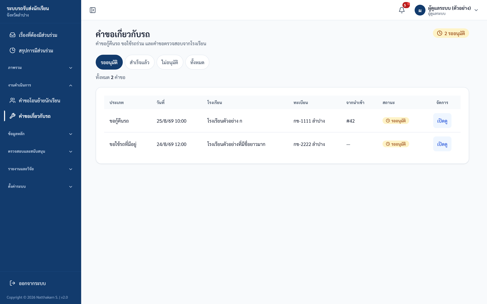
ภาพ: คำขอเกี่ยวกับรถ
ขั้นตอน:
- เลือกตัวกรอง (เหมือนคำขอโอนย้าย: รออนุมัติ/อนุมัติแล้ว/ไม่อนุมัติ/ทั้งหมด)
- กด "เปิดดู" เพื่อดูรายละเอียด
- ใส่ หมายเหตุผู้ดูแล (จำเป็น)
- กด "อนุมัติและกู้คืนรถ" / "อนุมัติคำขอ" หรือ "ไม่อนุมัติ"
✅ ผลลัพธ์ที่ถูกต้อง: มีเพียงคำขอ กู้คืนรถ เท่านั้นที่แก้ข้อมูลรถจริง (นำรถที่ถูกลบกลับมาใช้) — คำขอประเภทอื่นเป็นเพียงข้อมูลแจ้งให้ทราบ ไม่แตะข้อมูลรถ
⚠️ ถ้าติดปัญหา: ถ้ามีรถ ทะเบียนเดียวกันที่ยังใช้งานอยู่ ปุ่มอนุมัติจะถูกปิด (disable) และการกู้คืนจะ FAILED พร้อมข้อความ "ไม่สามารถกู้คืนรถได้ เนื่องจากมีรถทะเบียนเดียวกันที่ใช้งานอยู่แล้ว" — ต้องจัดการรถที่ทะเบียนชนกันก่อน
งานที่ 6 — ดูแลสุขภาพข้อมูลคนขับ + wizard
ใช้เมื่อ: ตรวจความถูกต้องข้อมูลคนขับ หรือต้องกู้คืน/ย้าย/ปิดคนขับ
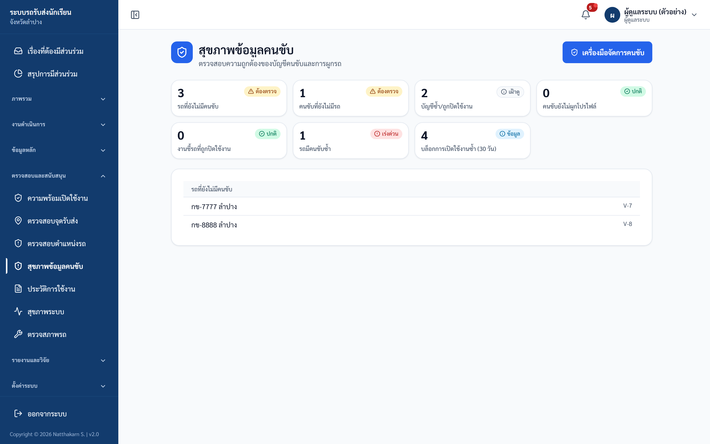
ภาพ: สุขภาพข้อมูลคนขับ
สิ่งที่เห็นบนหน้าจอ: การ์ดสรุป 7 รายการ — "รถที่ยังไม่มีคนขับ" / "คนขับที่ยังไม่มีรถ" / "บัญชีซ้ำ/ถูกปิดใช้งาน" / "คนขับยังไม่ผูกโปรไฟล์" / "งานชี้รถที่ถูกปิดใช้งาน" / "รถมีคนขับซ้ำ" / "บล็อกการเปิดใช้งานซ้ำ (30 วัน)", รายการ "รถที่ยังไม่มีคนขับ" (เฉพาะเมื่อมีรถค้าง), และปุ่ม "เครื่องมือจัดการคนขับ" ที่เปิด wizard
ขั้นตอน — ใช้ wizard เครื่องมือจัดการคนขับ:
- กด "เครื่องมือจัดการคนขับ" เปิด wizard
- เลือก action: กู้คืนบัญชีคนขับ / ย้ายคนขับไปรถใหม่ / ปิดใช้งานคนขับ
- กรอก user id ของคนขับ (และ vehicle id ปลายทาง ถ้าเป็นการย้าย)
- กด "ตรวจสอบก่อนดำเนินการ" — ระบบแสดงผลตรวจล่วงหน้า (preflight): อนุญาต / ถูกบล็อก / คำเตือน
- ถ้าผ่าน ใส่ *"เหตุผล " (จำเป็น) แล้วกด "ยืนยันดำเนินการ"
✅ ผลลัพธ์ที่ถูกต้อง: preflight แสดงผลล่วงหน้า; ปิดใช้งานคนขับ จะปิดบัญชีและจบงานมอบหมายที่ active ให้ในขั้นตอนเดียว
⚠️ ถ้าติดปัญหา:
- กู้คืน: ถ้าเป็นบัญชีคนขับซ้ำจะถูกบล็อก — ต้องใช้บัญชีหลัก (canonical); กรณีไม่มีรถ active เป็นเพียงคำเตือน ดำเนินการต่อได้
- ย้ายคนขับ: ถ้ารถปลายทางมีคนขับอยู่แล้ว ต้องติ๊ก "ยืนยันสิ้นสุดงานคนขับเดิม" ไม่งั้นระบบจะปฏิเสธ (กันคนขับซ้ำในรถคันเดียว)
งานที่ 7 — ตรวจสอบจุดรับส่ง
ใช้เมื่อ: จัดการกรณีพิเศษของจุดรับส่งทั้งระบบ (การเพิ่มจุดหลักทำผ่านบัญชีคนขับ/โรงเรียน)
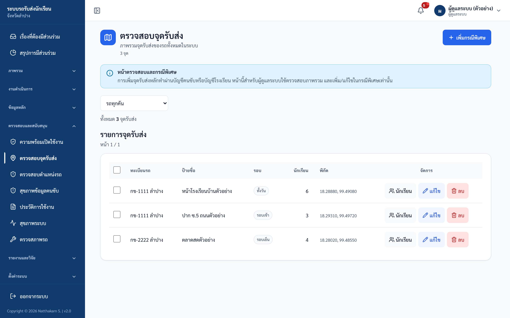
ภาพ: ตรวจสอบจุดรับ-ส่ง
ขั้นตอน:
- กด "เพิ่มกรณีพิเศษ" เพื่อเพิ่มจุดรับส่งกรณีพิเศษ (override)
- กรองตามรถเพื่อหารายการที่ต้องการ
- (ถ้าลบหลายรายการ) เลือกหลายรายการแล้วกด "ลบรายการที่เลือก"
- ใช้ปุ่มแถวตามต้องการ: จัดการนักเรียน / แก้ไข / ลบ
✅ ผลลัพธ์ที่ถูกต้อง: จุดกรณีพิเศษถูกบันทึก; การลบเป็น soft delete (ข้อมูลซ่อนแต่ยังอยู่ใน audit log)
⚠️ ถ้าติดปัญหา: ป้ายชื่อจุดต้องไม่เกิน 100 ตัวอักษร, พิกัดต้องอยู่ในช่วงที่ถูกต้อง, นักเรียนที่ผูกต้องเป็นของรถคันนั้นและไม่มีจุดซ้ำในรอบเดียวกัน
งานที่ 8 — ตรวจสอบตำแหน่งรถ (GPS)
ใช้เมื่อ: ดูสถานะ GPS ของรถทั้งระบบ (อ่านอย่างเดียว — ไม่มีปุ่มแก้ไข)
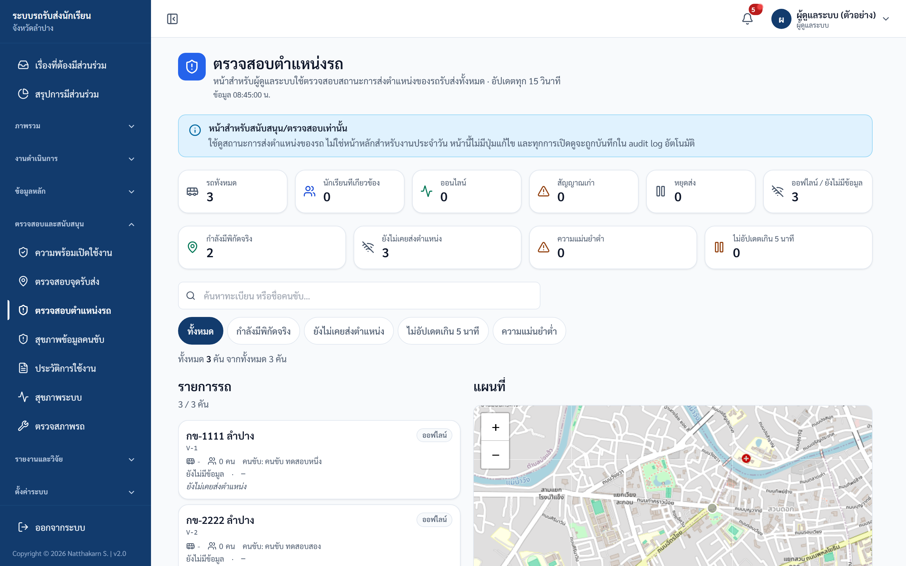
ภาพ: ตรวจสอบตำแหน่งรถ (live)
ขั้นตอน:
- เปิดเมนู "ตรวจสอบตำแหน่งรถ"
- ดูตัวเลขสรุป: ออนไลน์ / สัญญาณเก่า / หยุดส่ง / ออฟไลน์ / มีพิกัดจริง / ยังไม่เคยส่ง / ความแม่นยำต่ำ / ไม่อัปเดตเกิน 5 นาที
- ดูแผนที่และรายการรถ (หน้านี้รีเฟรชอัตโนมัติทุก 15 วินาที)
✅ ผลลัพธ์ที่ถูกต้อง: เห็นตัวเลขสรุป + แผนที่ + รายการรถ และข้อมูลอัปเดตเองทุก 15 วินาที
ℹ️ แบนเนอร์ระบุ "ทุกการเปิดดูจะถูกบันทึกใน audit log" — การเข้าดูหน้านี้ถูกบันทึกเพื่อความโปร่งใส
งานที่ 9 — ดูความพร้อมเปิดใช้งาน
ใช้เมื่อ: ตรวจว่าข้อมูลพร้อมเปิดบังคับใช้นโยบายความปลอดภัยแค่ไหน (รายงานรวม ไม่มีข้อมูลส่วนบุคคล)
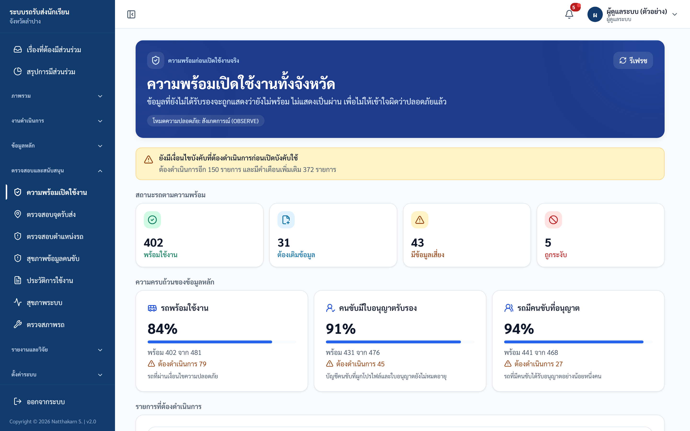
ภาพ: ความพร้อมเปิดใช้งาน
ขั้นตอน:
- เปิดเมนู "ความพร้อมเปิดใช้งาน"
- ดูสถานะรถ (พร้อมใช้งาน / ต้องเติมข้อมูล / มีข้อมูลเสี่ยง / ถูกระงับ)
- ดูสถานะคนขับ (การผูกบัญชี/ใบอนุญาต) และการมอบหมายคนขับ + คนขับสำรอง
- ดูรายการ "ช่องว่าง (gaps)" พร้อมเจ้าของงานที่ต้องแก้ แล้วประสานให้แก้ไข
✅ ผลลัพธ์ที่ถูกต้อง: เห็นภาพรวมความพร้อมและรายการ gaps พร้อมเจ้าของงาน
ℹ️ โหมดนโยบาย (policy_mode) ปัจจุบันเป็น OBSERVE (เฝ้าสังเกต ยังไม่บังคับ) — การสลับเป็นโหมดบังคับใช้ (ENFORCE) ตั้งค่าโดยผู้ดูแลเซิร์ฟเวอร์เท่านั้น ไม่สามารถสลับจากหน้าจอนี้
งานที่ 10 — ดูสุขภาพระบบ
ใช้เมื่อ: ดูสถิติการใช้งานระบบย้อนหลัง 30 วัน
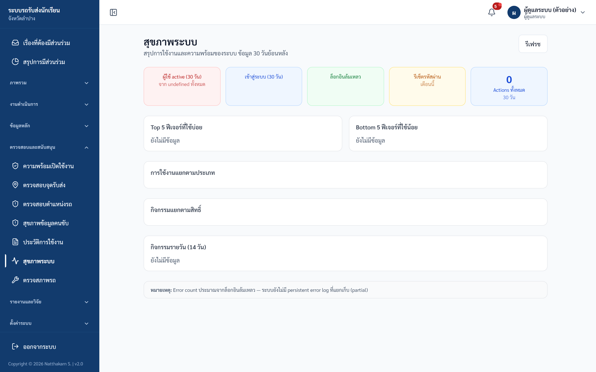
ภาพ: สุขภาพระบบ
ขั้นตอน:
- เปิดเมนู "สุขภาพระบบ"
- ดูตัวเลข: ผู้ใช้ active, จำนวน login / login ล้มเหลว, การรีเซ็ตรหัสเดือนนี้, การเข้าชมเว็บไซต์ (วันนี้ / 7 วัน / 30 วัน)
- ดู 5 ฟีเจอร์ที่ใช้มากสุด/น้อยสุด, การใช้งานแยกตามประเภทการกระทำ, กิจกรรมแยกตามบทบาท, กิจกรรมรายวัน 14 วัน
- กด "รีเฟรช" เพื่ออัปเดตตัวเลข
✅ ผลลัพธ์ที่ถูกต้อง: เห็นสถิติการใช้งานครบทุกส่วน
ℹ️ ตัวเลข "Error count" เป็นค่าประมาณจากการ login ล้มเหลวเท่านั้น (ระบบยังไม่มีบันทึก error แบบถาวร) — ใช้ดูแนวโน้มคร่าว ๆ ไม่ใช่ตัวเลขแม่นยำ
งานที่ 11 — ดูประวัติการใช้งาน (Audit Log) + ส่งออก
ใช้เมื่อ: ตรวจสอบ/ตามรอยการกระทำในระบบ — หน้า "ประวัติการใช้งานระบบ (ทั้งหมด)" แสดง audit log ทั้งระบบโดยไม่จำกัดขอบเขต
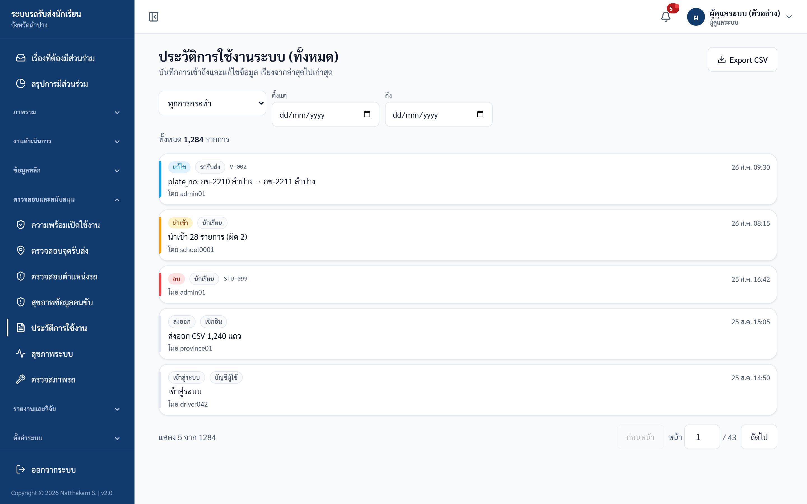
ภาพ: ประวัติการใช้งานระบบ (Audit log)
ขั้นตอน:
- ใช้ตัวกรอง action (ประเภทการกระทำ), date_from, date_to เพื่อจำกัดช่วง
- เลื่อนดูตาราง (แบ่งหน้า สูงสุด 100 รายการต่อหน้า)
- กดส่งออกเป็น CSV ตามต้องการ
✅ ผลลัพธ์ที่ถูกต้อง: เห็นรายการ audit ตามตัวกรอง / CSV มี BOM (เปิดในภาษาไทยได้)
⚠️ ถ้าติดปัญหา:
- ข้อมูลส่วนบุคคล (เบอร์โทร / LINE id / ความลับ) จะถูก ปกปิด (redact) ก่อนแสดงและก่อนส่งออกเสมอ (เป็นพฤติกรรมปกติ)
- CSV จำกัดสูงสุด 5,000 แถว — ถ้าเกินจะมีหมายเหตุระบุว่าถูกตัด
งานที่ 12 — งานวิจัย / ประเมินผล
ใช้เมื่อ: สร้าง baseline, ส่งออกข้อมูลวิจัย, ประเมินผลแยกบทบาท, ทำสรุปผู้บริหาร (เฉพาะ admin)
12.1 กรอบวัดผลระบบ — คู่มือตัวชี้วัด เกณฑ์ การปรับระบบ และข้อพึงระวัง แยกตามบทบาท (เอกสารอ้างอิง ไม่มีปุ่มสั่งงาน)
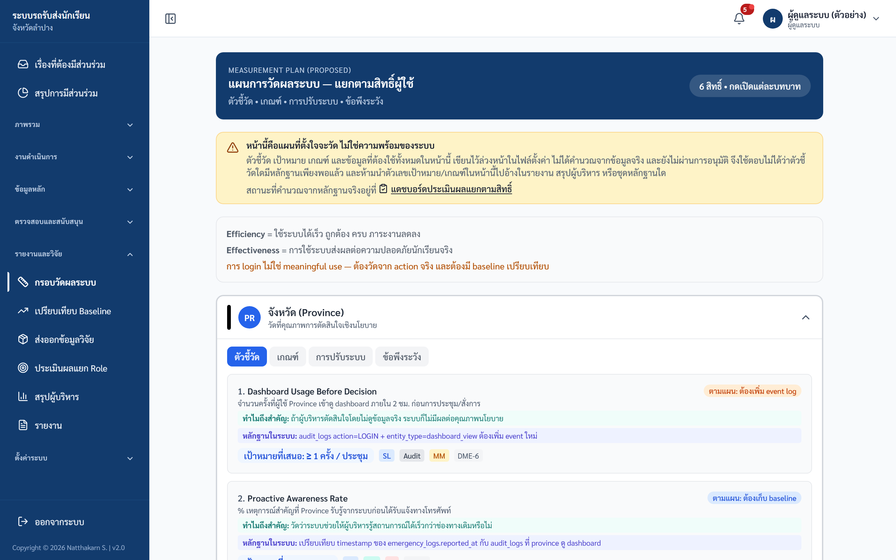
ภาพ: กรอบวัดผลระบบ
12.2 เปรียบเทียบ Baseline — เทียบ baseline กับปัจจุบัน 8 ตัวชี้วัด ขั้นตอน: กด "📸 Snapshot วันนี้", "🔖 สร้าง Baseline", หรือ "🔬 Baseline (Pre-measure)" ตามต้องการ ⚠️ ถ้าติดปัญหา: สร้าง Baseline ซ้ำภายใน 24 ชั่วโมงไม่ได้ (กัน baseline ซ้อนกัน) — รอครบ 24 ชั่วโมงหรือใช้ baseline ที่มีอยู่
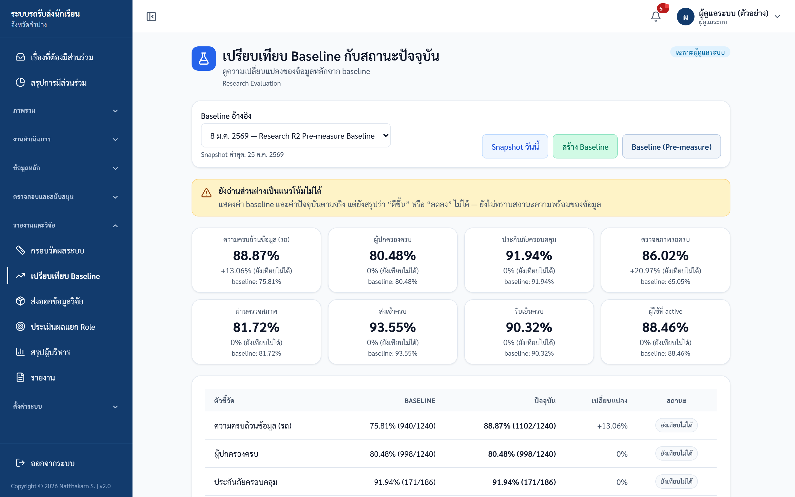
ภาพ: เปรียบเทียบ Baseline
12.3 ส่งออกข้อมูลวิจัย ขั้นตอน:
- เลือกช่วงวันที่ + ชุดข้อมูล (Snapshots / Action Logs / Export Evidence / Summary)
- ดูหน้าตัวอย่าง (preview)
- ดาวน์โหลดเป็น JSON / CSV / Excel ✅ ผลลัพธ์ที่ถูกต้อง: ข้อมูลส่งออกตัด IP/User Agent/ค่าก่อนแก้ไขออก และปกปิดข้อมูลส่วนบุคคลในค่าหลังแก้ไข เพื่อความเป็นส่วนตัว
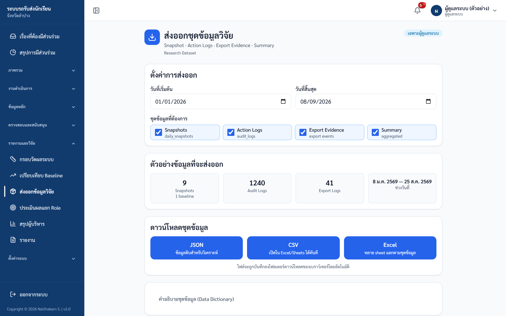
ภาพ: ส่งออกข้อมูลวิจัย
12.4 ประเมินผลแยก Role — การ์ดต่อบทบาทพร้อมสถานะ "พร้อมประเมิน / ประเมินได้บางส่วน / ยังต้องเพิ่มหลักฐาน" และเทียบกับ baseline
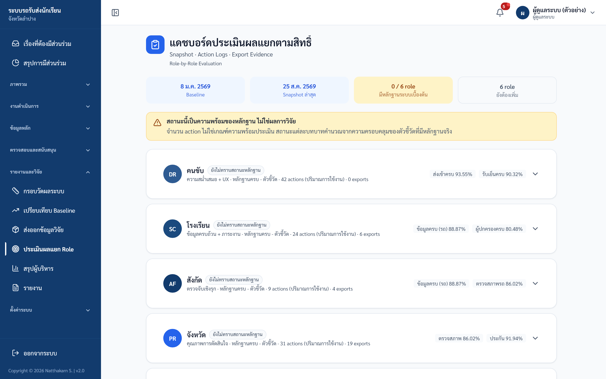
ภาพ: ประเมินผลแยก Role
12.5 สรุปผู้บริหาร — สรุปความพร้อมรายสิทธิ์ พร้อมรายการปรับปรุง/ความเสี่ยง ขั้นตอน: กด "🖨️ พิมพ์รายงาน" เพื่อเปิดหน้าพิมพ์สำหรับผู้บริหาร
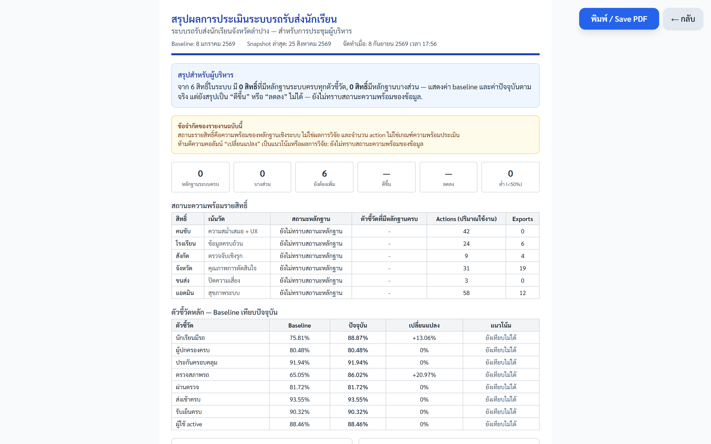
ภาพ: สรุปผู้บริหาร
งานที่ 13 — รายงานและการส่งออก
ใช้เมื่อ: ออกรายงานรายวัน/รายเดือน/สรุป — admin เห็นข้อมูลทั้งจังหวัด และส่งออกได้ทุกแบบ
ขั้นตอน:
- เปิดเมนู "รายงาน"
- เลือกประเภท: รายวัน / รายเดือน / สรุป (แสดงเป็นข้อมูล JSON บนหน้าจอ)
- ตั้งตัวกรองที่รองรับ: วันที่ (YYYY-MM-DD), เดือน (YYYY-MM), โรงเรียน, สังกัด, ทะเบียนรถ
- ส่งออกตามต้องการ: CSV (มี BOM เปิดภาษาไทยได้), Excel (.xlsx), PDF
การส่งออกอื่น ๆ ของ admin:
- Audit CSV — ส่งออกประวัติการใช้งานทั้งระบบ (ปกปิดข้อมูลส่วนบุคคล สูงสุด 5,000 แถว) จากหน้า "ประวัติการใช้งาน" (งานที่ 11)
- ชุดข้อมูลวิจัย — ส่งออก JSON/CSV/Excel จากหน้า "ส่งออกข้อมูลวิจัย" (งานที่ 12.3, เฉพาะ admin)
✅ ผลลัพธ์ที่ถูกต้อง: ได้ไฟล์รายงานตามรูปแบบที่เลือก / ทุกการส่งออกถูกบันทึกใน audit log (action = EXPORT) และใช้เป็น "หลักฐานการส่งออก (Export Evidence)" ในรายงานวิจัยได้
⚠️ ถ้าติดปัญหา: การส่งออกมีการจำกัดอัตรา (rate limit) ที่ 40 ครั้งต่อ 5 นาที — ถ้าส่งออกถี่เกินไปให้รอสักครู่

ภาพ: หน้ารายงาน — แท็บ รายวัน/รายเดือน/สรุปภาพรวม พร้อมปุ่มส่งออก
งานที่ 14 — เข้าใช้งานโมดูลบทบาทอื่น
ใช้เมื่อ: ต้องทำงานแทนบทบาทอื่น (admin เข้าได้เต็มสิทธิ์ทุกโมดูล)
ขั้นตอน:
- เลือกเมนูตามงาน:
- จัดการโรงเรียน → โมดูลโรงเรียน (จัดการนักเรียน/นำเข้า)
- เพิ่มโรงเรียนใหม่ → โมดูลสังกัด (จัดการบัญชีโรงเรียน/เพิ่มโรงเรียน)
- ตรวจสภาพรถ → โมดูลขนส่ง (บันทึก/ดูผลตรวจสภาพ)
- มุมมองจังหวัด → ภาพรวมจังหวัด / ข้อมูลนักเรียน / รถรับส่ง
- รายงาน → ดูงานที่ 13
- ใช้งานแต่ละโมดูลตามคู่มือของบทบาทนั้น ๆ
✅ ผลลัพธ์ที่ถูกต้อง: เข้าทำงานในโมดูลของบทบาทอื่นได้เต็มสิทธิ์
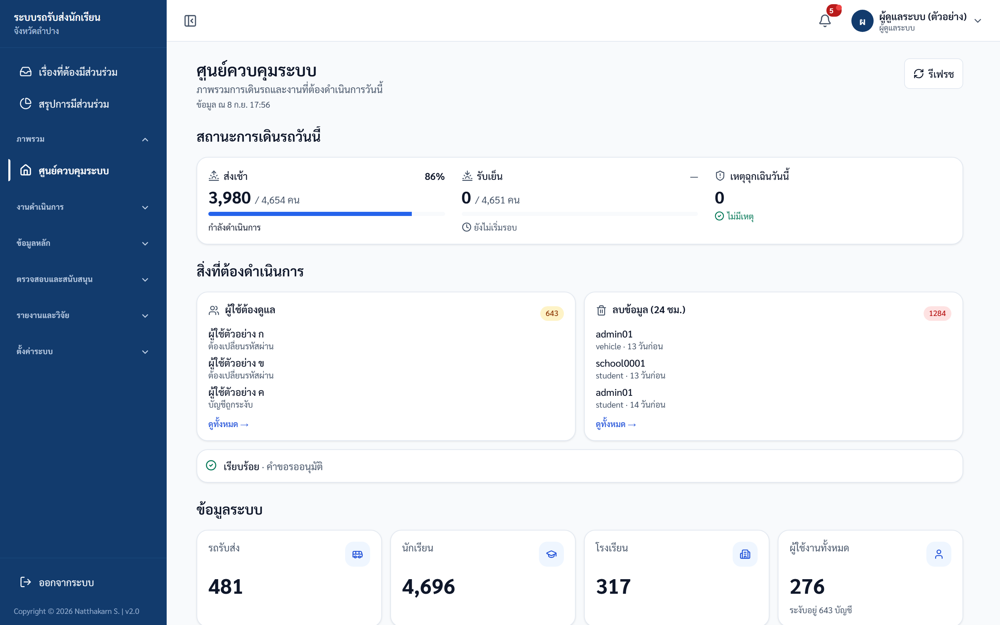
ภาพ: เข้าโมดูลบทบาทอื่น: แถบ "Admin — เลือกโรงเรียน" ด้านบน
งานที่ 15 — ฟีเจอร์ขั้นสูงที่ปิดอยู่ (อ้างอิง)
ใช้เมื่อ: มีคนถามถึงฟีเจอร์เหล่านี้ หรือเปิดเมนู/หน้าแล้วได้ 404
ℹ️ เมนู "จุดเตือนภัย (Geofences)" และ "การเบี่ยงเส้นทาง" จะถูก ซ่อนอัตโนมัติ เมื่อฟีเจอร์ยังไม่เปิด — ปัจจุบันคุณจะ ไม่เห็น 2 เมนูนี้ ส่วน "QR รถรับส่ง" มีอยู่ในระบบแต่ ไม่อยู่ในเมนู และปัจจุบันปิดอยู่
15.1 จุดเตือนภัย (Geofences)
⚠️ ฟีเจอร์นี้เปิดด้วย feature flag
FEATURE_GEOFENCE— ปัจจุบันปิดอยู่ในการใช้งานจริง เมนูถูกซ่อนและการเปิดหน้าจะได้ผล 404 ต้องให้ผู้ดูแลเซิร์ฟเวอร์เปิด flag ก่อน
หน้านี้ (เมื่อเปิดใช้) จัดการ geofence (พื้นที่เสมือนรอบโรงเรียน/จุดรับส่ง): เพิ่ม/แก้ไข/ลบ, ปุ่ม "สร้างอัตโนมัติ" (สร้างชุดเริ่มต้น), ดูเหตุการณ์เข้า/ออกพื้นที่ 50 รายการล่าสุด — การตั้งค่าต้องระบุประเภทเป้าหมาย (โรงเรียน/จุดรับส่ง/อู่), เงื่อนไขทริกเกอร์ (เข้า/ออก/ทั้งสอง), พิกัด, รัศมี (1–50,000 เมตร), ผู้รับการแจ้งเตือน; การลบเป็น soft delete
15.2 การเบี่ยงเส้นทาง
⚠️ ฟีเจอร์นี้เปิดด้วย feature flag
FEATURE_ROUTE_DEVIATION— ปัจจุบันปิดอยู่ในการใช้งานจริง เมนูถูกซ่อนและการเปิดหน้าจะได้ผล 404
หน้านี้ (เมื่อเปิดใช้) เป็น log แบบ อ่านอย่างเดียว ของเหตุการณ์รถเบี่ยงเส้นทาง/ล่าช้า/หยุดนิ่งนาน กรองได้ด้วย "เฉพาะที่ยังไม่ resolved" และระดับความรุนแรง (WARN / CRITICAL / INFO)
15.3 QR รถรับส่ง
⚠️ ฟีเจอร์นี้เปิดด้วย feature flag
FEATURE_VEHICLE_QR— ปัจจุบันปิดอยู่ในการใช้งานจริง หน้านี้ ไม่มีในเมนู และการเรียก API จะได้ผล 404 ต้องให้ผู้ดูแลเซิร์ฟเวอร์เปิด flag ก่อน
หน้านี้ (เมื่อเปิดใช้) ใช้สร้าง/หมุน/ดู QR token ของรถ + พิมพ์ QR + ดูตัวอย่างข้อมูลระดับเจ้าหน้าที่
ℹ️ การดูข้อมูลระดับ 3 (ข้อมูลอ่อนไหว) ต้องเปิด flag เพิ่มอีกตัว (
FEATURE_QR_LEVEL3) ซึ่งต้องผ่านการอนุมัติของผู้คุ้มครองข้อมูล (DPO) — ปิดเป็นค่าตั้งต้น
📷 ไม่มีภาพหน้าจอ — ฟีเจอร์ขั้นสูง (Geofence / การเบี่ยงเส้นทาง / QR) ถูกปิดด้วย feature flag ยังไม่เปิดใช้งานจริง จึงยังไม่มีหน้าจอให้แสดง
งานที่ 16 — ออกจากระบบ
ใช้เมื่อ: เลิกใช้งานระบบ
ขั้นตอน:
- กดปุ่ม "ออกจากระบบ" ที่มุมล่างของแถบเมนูด้านข้าง (Sidebar)
✅ ผลลัพธ์ที่ถูกต้อง: กลับไปหน้าเข้าสู่ระบบ

ภาพ: เมนูบัญชี (มุมขวาบน) — "เปลี่ยนรหัสผ่าน" / "ออกจากระบบ"
ตารางขอบเขตสิทธิ์ (อ้างอิงด่วน)
คุณเห็นข้อมูลได้แค่ไหน:
| ข้อมูล | ขอบเขต |
|---|---|
| นักเรียน / รถ / โรงเรียน / สังกัด | เห็นทั้งจังหวัด (ไม่จำกัดขอบเขต) |
| บัญชีผู้ใช้ทุกบทบาท | จัดการได้ทั้งหมด |
| ประวัติการใช้งาน (audit log) | เห็นทั้งระบบ |
| ตำแหน่งรถ / จุดรับส่ง | เห็นทั้งระบบ |
| รายงาน / การส่งออก | ทุกระดับทั้งจังหวัด |
สิทธิ์เฉพาะ admin (ไม่มีบทบาทอื่นทำได้): จัดการบัญชีผู้ใช้ทุกบทบาท • เครื่องมือจัดการวงจรชีวิตคนขับ (กู้คืน/ย้าย/ปิด) • อนุมัติคำขอโอนย้ายนักเรียนและคำขอเกี่ยวกับรถ • จัดการ geofence (เมื่อเปิดใช้) • ตรวจสอบจุดรับส่ง/ตำแหน่งรถ (มุมมอง admin) • หน้าวิจัย/snapshot/ส่งออกข้อมูลวิจัย • สุขภาพระบบ
สิ่งที่ทำไม่ได้ (และใครทำแทน):
| ทำไม่ได้ | หมายเหตุ / ใครทำแทน |
|---|---|
| ลบบัญชีตัวเอง | ระบบป้องกัน (ขึ้น "ไม่สามารถลบตัวเองได้") |
| เปิดใช้งานบัญชีคนขับซ้ำ | ต้องใช้บัญชีหลัก (canonical) หรือใช้ wizard ที่ "สุขภาพข้อมูลคนขับ" |
| กู้คืนรถที่ทะเบียนชนกับรถที่ใช้งานอยู่ | ต้องจัดการรถที่ชนกันก่อน |
| รีเซ็ตรหัส admin ของตัวเองเมื่อถูกล็อก | ต้องให้ admin อีกคนทำ (ควรมี admin สำรอง) |
| สลับโหมด OBSERVE → ENFORCE จากหน้าจอ | ตั้งค่าโดยผู้ดูแลเซิร์ฟเวอร์ (env) เท่านั้น |
| อนุมัติคำขอเปลี่ยนรายชื่อ (roster) รวมศูนย์ | ทำที่ฝั่งโรงเรียน (admin เห็นแค่ตัวเลขเตือน) |
ℹ️ ฟีเจอร์ที่แชร์กับบทบาทอื่น: ความพร้อมเปิดใช้งาน และ การเบี่ยงเส้นทาง (ใช้ร่วมกับจังหวัด); QR token (ใช้ร่วมกับขนส่ง)
สรุปปัญหาที่พบบ่อย
| อาการ | วิธีแก้ |
|---|---|
| สร้าง/รีเซ็ตผู้ใช้แล้วขึ้น "รหัสผ่านต้องมีอย่างน้อย 8 ตัวอักษร" | ระบบบังคับรหัส ≥8 ตัวทุกครั้งที่ตั้งให้ผู้ใช้ (รวมรหัสชั่วคราว) ห้ามตรงกับชื่อผู้ใช้/ห้ามเดาง่าย — ตั้งรหัสให้ยาวพอแล้วลองใหม่ (ผู้ใช้ยังถูกบังคับเปลี่ยนเองตอน login ครั้งถัดไป) |
| เปิดใช้งานบัญชีคนขับที่ปิดไว้ไม่ได้ ("ไม่สามารถเปิดใช้งานบัญชีคนขับนี้ได้…") | บัญชีซ้ำ/ผูกรถที่ถูกปิด — ใช้บัญชีหลัก (canonical) หรือใช้ wizard ที่ "สุขภาพข้อมูลคนขับ" (งานที่ 6) |
| อนุมัติคำขอโอนย้ายแล้วได้ FAILED | มีรหัสนักเรียนซ้ำที่โรงเรียนปลายทาง หรือข้อมูลไม่ครบ — แก้ที่ปลายทางก่อน |
| อนุมัติคำขอโอนย้ายแล้วได้ STALE_NEEDS_REVIEW | ข้อมูลนักเรียนเปลี่ยนหลังส่งคำขอ — เปิดดูและตรวจสอบใหม่ก่อนอนุมัติ |
| กู้คืนรถไม่สำเร็จ ปุ่มอนุมัติเป็นสีจาง (disable) | มีรถทะเบียนเดียวกันที่ยังใช้งานอยู่ (canonical conflict) — จัดการรถที่ทะเบียนชนกันก่อน |
| ลบจุดรับส่ง/ผู้ใช้แล้ว ยังเห็นใน audit log | เป็น soft delete โดยตั้งใจ — ซ่อนจากการใช้งานแต่เก็บประวัติไว้ตรวจสอบ |
| เข้า "จุดเตือนภัย"/"การเบี่ยงเส้นทาง"/"QR รถรับส่ง" แล้ว 404 หรือไม่เห็นเมนู | ฟีเจอร์ปิดด้วย feature flag (งานที่ 15) ไม่ใช่บั๊ก — ให้ผู้ดูแลเซิร์ฟเวอร์เปิด flag ก่อน |
| ถูกเด้งออก/ถูกบังคับเปลี่ยนรหัสกะทันหัน ("เซสชันหมดอายุจากการเปลี่ยนรหัสผ่าน") | admin อีกคนรีเซ็ตรหัสคุณ หรือคุณเปลี่ยนรหัสที่เครื่องอื่น — เข้าสู่ระบบใหม่ด้วยรหัสล่าสุด |
| สร้าง Baseline ซ้ำไม่ได้ | ระบบห้ามสร้างซ้ำภายใน 24 ชั่วโมง — รอครบเวลา หรือใช้ baseline ที่มีอยู่ |
| ตัวเลข Error count ในสุขภาพระบบดูไม่ตรง | เป็นค่าประมาณจาก login ล้มเหลวเท่านั้น — ใช้ดูแนวโน้ม ไม่ใช่ตัวเลขแม่นยำ |
| "ตรวจสอบตำแหน่งรถ"/"ตรวจสอบจุดรับส่ง" แก้อะไรไม่ได้ | "ตรวจสอบตำแหน่งรถ" อ่านอย่างเดียว; "ตรวจสอบจุดรับส่ง" ใช้กรณีพิเศษ (override) — เพิ่มจุดหลักผ่านบัญชีคนขับ/โรงเรียน |
การขอความช่วยเหลือ
- admin ลืมรหัส / ถูกล็อกออก → ให้ admin อีกคนรีเซ็ตให้ (ถ้าไม่มี admin สำรอง ต้องพึ่งผู้ดูแลเซิร์ฟเวอร์)
- ต้องการเปิดฟีเจอร์ขั้นสูง (Geofences / การเบี่ยงเส้นทาง / QR / โหมดบังคับใช้ความปลอดภัย) → ติดต่อผู้ดูแลเซิร์ฟเวอร์ให้เปิด feature flag
- ปัญหาข้อมูลคนขับ/รถที่ซับซ้อน → ใช้หน้า "สุขภาพข้อมูลคนขับ" (งานที่ 6) และ "คำขอเกี่ยวกับรถ" (งานที่ 5) เป็นเครื่องมือหลัก
เวลาแจ้งปัญหากับทีม โปรดส่ง: ชื่อผู้ใช้ (username) ของบัญชีที่เกี่ยวข้อง • เวลาที่เกิดปัญหา • ภาพหน้าจอ (รวมข้อความผิดพลาด) • หน้า/เมนูที่ใช้งานตอนเกิดปัญหา
สิ้นสุดคู่มือปฏิบัติงานสำหรับผู้ดูแลระบบ — ดูแลระบบอย่างรอบคอบ ปกป้องข้อมูลนักเรียนและความปลอดภัยเป็นสำคัญ